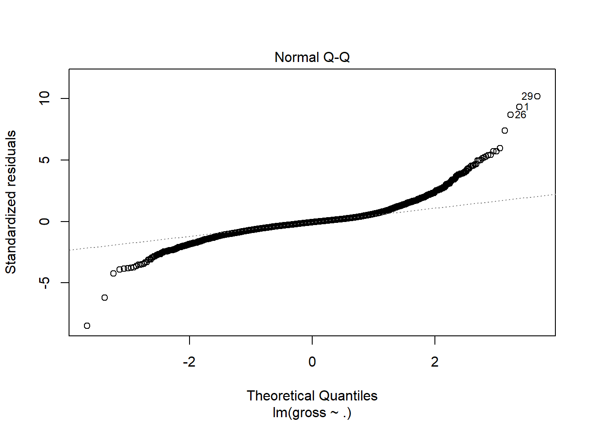
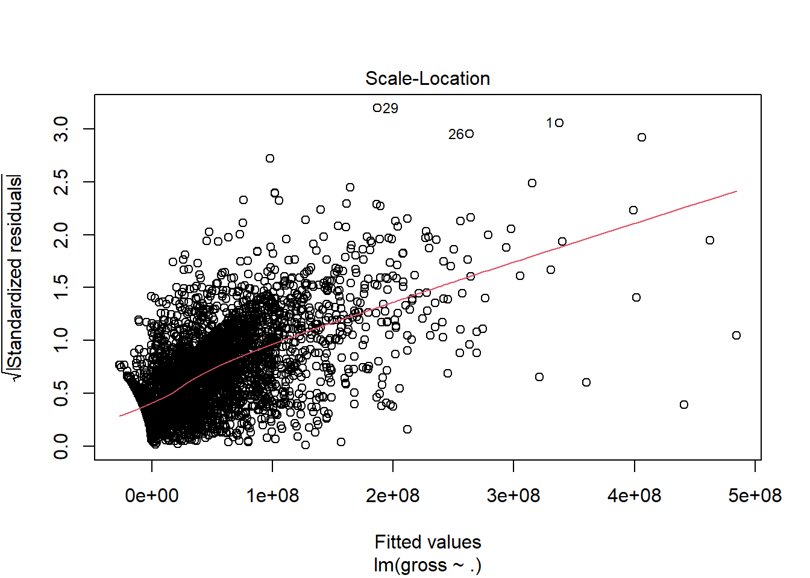
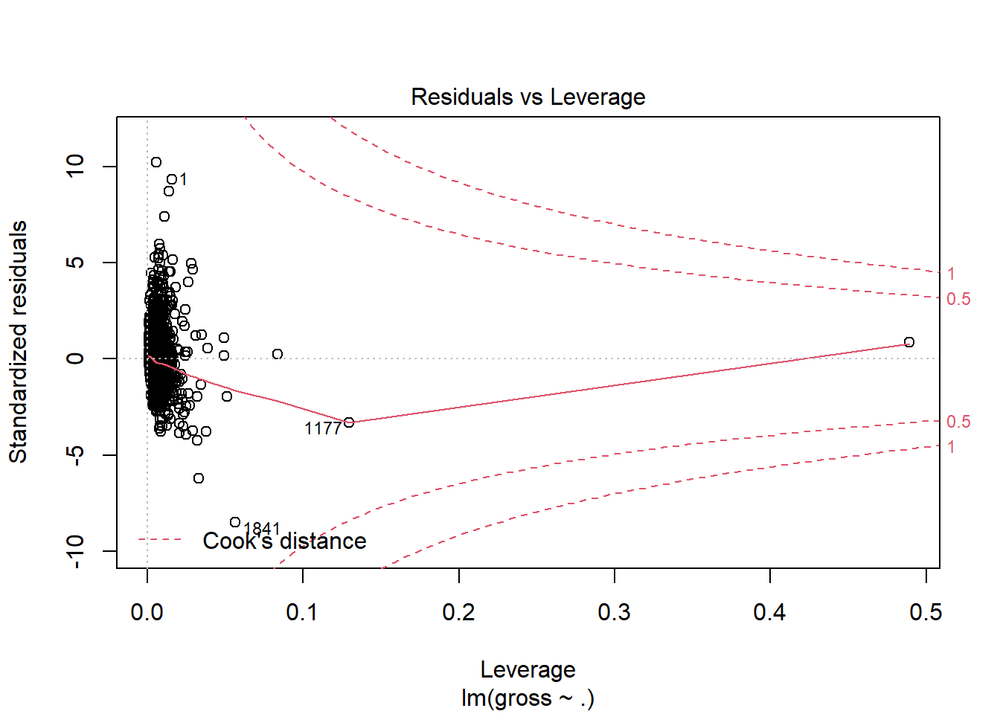
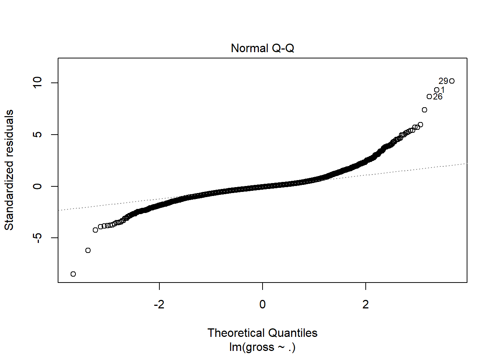
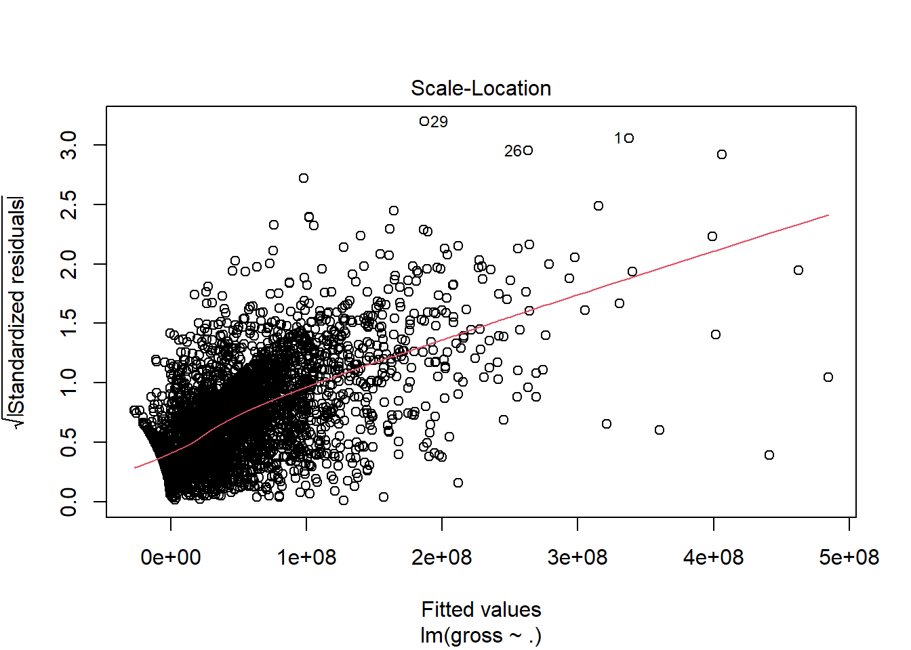
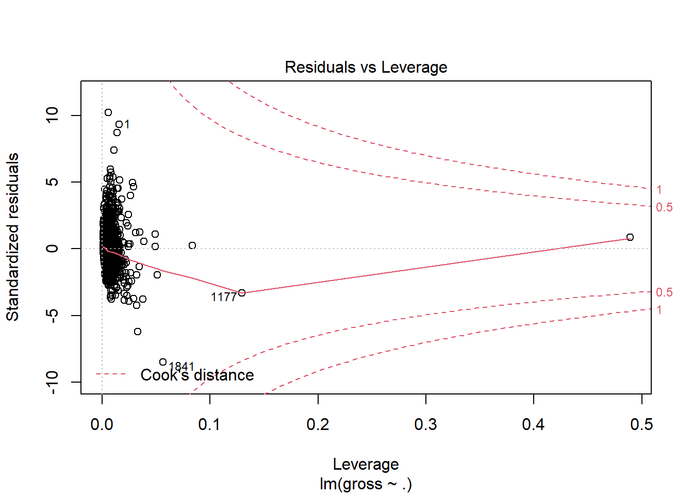
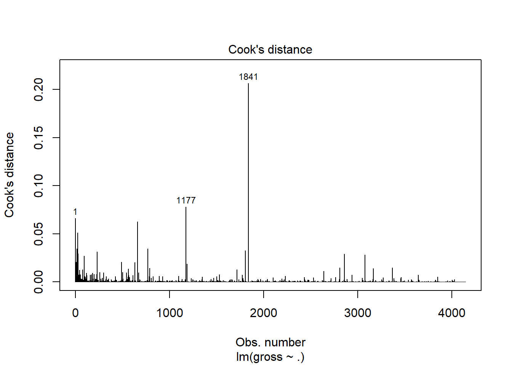
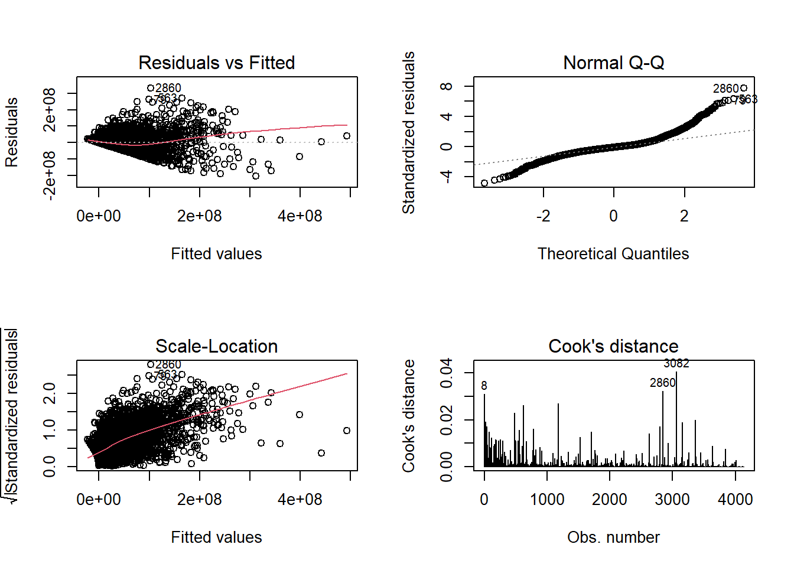

p8105_IMDB_Model
Zhe Chen, Yatong Feng
2020/11/10
include libraries
library(tidyverse)## -- Attaching packages ------------------------------------------ tidyverse 1.3.0 --## √ ggplot2 3.3.2 √ purrr 0.3.4
## √ tibble 3.0.3 √ dplyr 1.0.2
## √ tidyr 1.1.2 √ stringr 1.4.0
## √ readr 1.3.1 √ forcats 0.5.0## -- Conflicts --------------------------------------------- tidyverse_conflicts() --
## x dplyr::filter() masks stats::filter()
## x dplyr::lag() masks stats::lag()library(stringr)import and cleaning data
imdb_raw = read_csv("./movie_metadata.csv")#data cleaning
imdb = imdb_raw %>%
as.data.frame() %>%
drop_na(movie_title) %>%
#keep only interested variables
select(
-color, -actor_2_name, -actor_2_facebook_likes, -actor_3_name, -actor_3_facebook_likes, -facenumber_in_poster, -movie_imdb_link, -content_rating, -plot_keywords
) %>%
drop_na(gross)
rownames(imdb) = c(1:dim(imdb)[1])#separate genres into multiple columns
a = imdb$genres
genres_list = unique(unlist(str_split(a, "[|]")))
niubility = as.data.frame(matrix(0, nrow=dim(imdb)[1], ncol=length(genres_list)))
colnames(niubility) = genres_list
for (i in 1:dim(imdb)[1]){
b = unlist(str_split(imdb$genres[i], "[|]"))
for (word in b){
niubility[i, word] = 1
}
}
rownames(niubility) = c(1:dim(imdb)[1])
imdb_after_genre = data.frame(imdb, niubility)Model building
imdb_model =
imdb_after_genre %>%
select(num_critic_for_reviews:gross, num_voted_users:num_user_for_reviews, budget, imdb_score: Film.Noir)
#build a comprehensive model
lm = lm(gross ~., data = imdb_model)
summary(lm)##
## Call:
## lm(formula = gross ~ ., data = imdb_model)
##
## Residuals:
## Min 1Q Median 3Q Max
## -368441236 -22116818 -3165155 15821138 470437243
##
## Coefficients: (1 not defined because of singularities)
## Estimate Std. Error t value Pr(>|t|)
## (Intercept) -1.479e+07 8.595e+06 -1.721 0.085361 .
## num_critic_for_reviews 7.777e+04 1.046e+04 7.436 1.28e-13 ***
## duration 3.856e+05 4.294e+04 8.980 < 2e-16 ***
## director_facebook_likes -8.849e+02 2.668e+02 -3.316 0.000921 ***
## actor_1_facebook_likes -1.478e+03 1.568e+02 -9.432 < 2e-16 ***
## num_voted_users 1.899e+02 9.956e+00 19.070 < 2e-16 ***
## cast_total_facebook_likes 1.406e+03 1.301e+02 10.810 < 2e-16 ***
## num_user_for_reviews 1.958e+04 3.314e+03 5.909 3.75e-09 ***
## budget 5.525e-03 3.467e-03 1.594 0.111120
## imdb_score -3.408e+06 9.681e+05 -3.520 0.000437 ***
## aspect_ratio -1.775e+06 2.285e+06 -0.777 0.437270
## movie_facebook_likes -7.592e+01 5.359e+01 -1.417 0.156647
## Action 1.085e+07 2.243e+06 4.836 1.38e-06 ***
## Adventure 1.549e+07 2.391e+06 6.479 1.05e-10 ***
## Fantasy 5.824e+06 2.519e+06 2.312 0.020854 *
## Sci.Fi -3.339e+06 2.571e+06 -1.299 0.194125
## Thriller 1.802e+06 2.196e+06 0.820 0.412034
## Romance 6.656e+06 2.005e+06 3.320 0.000910 ***
## Animation 2.109e+07 4.432e+06 4.758 2.02e-06 ***
## Comedy 8.200e+06 2.085e+06 3.933 8.54e-05 ***
## Family 3.112e+07 3.213e+06 9.684 < 2e-16 ***
## Musical -7.326e+05 4.959e+06 -0.148 0.882567
## Mystery -2.013e+06 2.770e+06 -0.727 0.467446
## Western -7.145e+06 6.206e+06 -1.151 0.249659
## Drama -1.323e+07 2.032e+06 -6.509 8.58e-11 ***
## History -7.180e+06 4.474e+06 -1.605 0.108588
## Sport 1.042e+07 4.138e+06 2.518 0.011853 *
## Crime -7.084e+06 2.298e+06 -3.083 0.002065 **
## Horror -8.474e+06 3.025e+06 -2.801 0.005119 **
## War -4.852e+06 4.209e+06 -1.153 0.249158
## Biography -1.022e+06 3.521e+06 -0.290 0.771679
## Music 8.085e+06 3.997e+06 2.023 0.043151 *
## Documentary 7.636e+06 7.027e+06 1.087 0.277216
## News NA NA NA NA
## Short 7.500e+06 4.790e+07 0.157 0.875574
## Film.Noir 1.443e+07 4.745e+07 0.304 0.761097
## ---
## Signif. codes: 0 '***' 0.001 '**' 0.01 '*' 0.05 '.' 0.1 ' ' 1
##
## Residual standard error: 47300000 on 3779 degrees of freedom
## (345 observations deleted due to missingness)
## Multiple R-squared: 0.5496, Adjusted R-squared: 0.5455
## F-statistic: 135.6 on 34 and 3779 DF, p-value: < 2.2e-16imdb_model_clean =
imdb_model %>%
select(num_critic_for_reviews:num_user_for_reviews, imdb_score, Action:Fantasy, Romance:Family, Drama, Sport:Horror, Music)
lm_clean = lm(gross ~., data = imdb_model_clean)
plot(lm_clean) 

plot(lm_clean, which=4)
Ci <- cooks.distance(lm_clean)
labelpoint <- which(Ci>0.025) #verify the outliers
# delate the outliers (cook distance greater than 0.025)
imdb_model_clean=imdb_model_clean[-labelpoint,]
# the modal and plot after delating the outliers
lm6 <- lm(gross ~., data = imdb_model_clean)
par(mfrow=c(2,2))
for (i in 1:4) {
plot(lm6,which = i)
}
summary(imdb_model_clean)## num_critic_for_reviews duration director_facebook_likes
## Min. : 1.0 Min. : 34.0 Min. : 0.0
## 1st Qu.: 70.0 1st Qu.: 95.0 1st Qu.: 10.0
## Median :129.0 Median :105.0 Median : 57.0
## Mean :158.6 Mean :109.4 Mean : 738.9
## 3rd Qu.:216.0 3rd Qu.:119.0 3rd Qu.: 218.0
## Max. :813.0 Max. :334.0 Max. :23000.0
## NA's :3 NA's :2 NA's :3
## actor_1_facebook_likes gross num_voted_users
## Min. : 0.0 Min. : 162 Min. : 5
## 1st Qu.: 696.2 1st Qu.: 5308592 1st Qu.: 15081
## Median : 1000.0 Median : 25445749 Median : 46205
## Mean : 7135.0 Mean : 47576730 Mean : 95498
## 3rd Qu.: 12000.0 3rd Qu.: 61467500 3rd Qu.: 114043
## Max. :260000.0 Max. :533316061 Max. :1676169
## NA's :4
## cast_total_facebook_likes num_user_for_reviews imdb_score
## Min. : 0 Min. : 1.0 Min. :1.600
## 1st Qu.: 1732 1st Qu.: 93.0 1st Qu.:5.900
## Median : 3689 Median : 190.0 Median :6.600
## Mean : 10592 Mean : 307.7 Mean :6.467
## 3rd Qu.: 15491 3rd Qu.: 374.0 3rd Qu.:7.200
## Max. :263584 Max. :5060.0 Max. :9.200
## NA's :1
## Action Adventure Fantasy Romance
## Min. :0.0000 Min. :0.0000 Min. :0.0000 Min. :0.0000
## 1st Qu.:0.0000 1st Qu.:0.0000 1st Qu.:0.0000 1st Qu.:0.0000
## Median :0.0000 Median :0.0000 Median :0.0000 Median :0.0000
## Mean :0.2361 Mean :0.1942 Mean :0.1269 Mean :0.2296
## 3rd Qu.:0.0000 3rd Qu.:0.0000 3rd Qu.:0.0000 3rd Qu.:0.0000
## Max. :1.0000 Max. :1.0000 Max. :1.0000 Max. :1.0000
##
## Animation Comedy Family Drama
## Min. :0.0000 Min. :0.0000 Min. :0.0000 Min. :0.0000
## 1st Qu.:0.0000 1st Qu.:0.0000 1st Qu.:0.0000 1st Qu.:0.0000
## Median :0.0000 Median :0.0000 Median :0.0000 Median :1.0000
## Mean :0.0492 Mean :0.3912 Mean :0.1136 Mean :0.5152
## 3rd Qu.:0.0000 3rd Qu.:1.0000 3rd Qu.:0.0000 3rd Qu.:1.0000
## Max. :1.0000 Max. :1.0000 Max. :1.0000 Max. :1.0000
##
## Sport Crime Horror Music
## Min. :0.00000 Min. :0.0000 Min. :0.00000 Min. :0.0000
## 1st Qu.:0.00000 1st Qu.:0.0000 1st Qu.:0.00000 1st Qu.:0.0000
## Median :0.00000 Median :0.0000 Median :0.00000 Median :0.0000
## Mean :0.04052 Mean :0.1833 Mean :0.09865 Mean :0.0451
## 3rd Qu.:0.00000 3rd Qu.:0.0000 3rd Qu.:0.00000 3rd Qu.:0.0000
## Max. :1.00000 Max. :1.0000 Max. :1.00000 Max. :1.0000
## write_csv(imdb_model_clean,"imdb_model_clean.csv")str_model = imdb_model %>% janitor::clean_names() %>% drop_na()## Warning in FUN(X[[i]], ...): strings not representable in native encoding will
## be translated to UTF-8## Warning in FUN(X[[i]], ...): unable to translate '<U+00C4>' to native encoding## Warning in FUN(X[[i]], ...): unable to translate '<U+00D6>' to native encoding## Warning in FUN(X[[i]], ...): unable to translate '<U+00E4>' to native encoding## Warning in FUN(X[[i]], ...): unable to translate '<U+00F6>' to native encoding## Warning in FUN(X[[i]], ...): unable to translate '<U+00DF>' to native encoding## Warning in FUN(X[[i]], ...): unable to translate '<U+00C6>' to native encoding## Warning in FUN(X[[i]], ...): unable to translate '<U+00E6>' to native encoding## Warning in FUN(X[[i]], ...): unable to translate '<U+00D8>' to native encoding## Warning in FUN(X[[i]], ...): unable to translate '<U+00F8>' to native encoding## Warning in FUN(X[[i]], ...): unable to translate '<U+00C5>' to native encoding## Warning in FUN(X[[i]], ...): unable to translate '<U+00E5>' to native encodingBuild model with stratification of genres
#generate data frame for each genre
genres_list = colnames(str_model)[13:length(colnames(str_model))][-22]
for (genre in genres_list) {
assign(paste0(genre, "_model_df"), str_model %>%
filter(get(genre) == 1) %>%
select(num_critic_for_reviews:movie_facebook_likes))
assign(paste0(genre, "_lm"), lm(gross ~., data = get(paste0(genre, "_model_df"))))
}#apply regression model to each genre's data frame
get_lm <- function(genres){
summary(get(paste0(genres, "_lm")))
}
genres_list## [1] "action" "adventure" "fantasy" "sci_fi" "thriller"
## [6] "romance" "animation" "comedy" "family" "musical"
## [11] "mystery" "western" "drama" "history" "sport"
## [16] "crime" "horror" "war" "biography" "music"
## [21] "documentary" "short" "film_noir"map(genres_list, get_lm)## [[1]]
##
## Call:
## lm(formula = gross ~ ., data = get(paste0(genre, "_model_df")))
##
## Residuals:
## Min 1Q Median 3Q Max
## -268125599 -25857908 -8112049 20604030 430736977
##
## Coefficients:
## Estimate Std. Error t value Pr(>|t|)
## (Intercept) 2.776e+07 2.195e+07 1.265 0.206206
## num_critic_for_reviews 5.915e+04 2.517e+04 2.350 0.018979 *
## duration 2.778e+05 1.037e+05 2.679 0.007509 **
## director_facebook_likes -8.610e+02 6.475e+02 -1.330 0.183922
## actor_1_facebook_likes -1.491e+03 3.636e+02 -4.100 4.49e-05 ***
## num_voted_users 2.492e+02 2.140e+01 11.647 < 2e-16 ***
## cast_total_facebook_likes 1.377e+03 2.919e+02 4.717 2.75e-06 ***
## num_user_for_reviews 2.326e+04 6.117e+03 3.802 0.000152 ***
## budget 9.026e-02 1.989e-02 4.538 6.41e-06 ***
## imdb_score -3.018e+06 2.294e+06 -1.315 0.188771
## aspect_ratio -1.537e+07 8.058e+06 -1.907 0.056817 .
## movie_facebook_likes 1.224e+02 1.188e+02 1.030 0.303135
## ---
## Signif. codes: 0 '***' 0.001 '**' 0.01 '*' 0.05 '.' 0.1 ' ' 1
##
## Residual standard error: 56770000 on 952 degrees of freedom
## Multiple R-squared: 0.6198, Adjusted R-squared: 0.6154
## F-statistic: 141.1 on 11 and 952 DF, p-value: < 2.2e-16
##
##
## [[2]]
##
## Call:
## lm(formula = gross ~ ., data = get(paste0(genre, "_model_df")))
##
## Residuals:
## Min 1Q Median 3Q Max
## -298109421 -35986399 -7014290 31268423 429394599
##
## Coefficients:
## Estimate Std. Error t value Pr(>|t|)
## (Intercept) 1.053e+08 2.572e+07 4.093 4.70e-05 ***
## num_critic_for_reviews 1.680e+05 3.004e+04 5.594 3.08e-08 ***
## duration -8.533e+04 1.032e+05 -0.827 0.40844
## director_facebook_likes -2.486e+03 8.305e+02 -2.994 0.00284 **
## actor_1_facebook_likes -1.366e+03 5.349e+02 -2.555 0.01082 *
## num_voted_users 3.440e+02 2.452e+01 14.033 < 2e-16 ***
## cast_total_facebook_likes 1.619e+03 3.437e+02 4.710 2.94e-06 ***
## num_user_for_reviews 6.367e+03 7.183e+03 0.886 0.37566
## budget 4.937e-02 1.884e-02 2.621 0.00894 **
## imdb_score -6.675e+06 2.783e+06 -2.398 0.01670 *
## aspect_ratio -2.433e+07 9.553e+06 -2.547 0.01105 *
## movie_facebook_likes -3.528e+02 1.178e+02 -2.994 0.00284 **
## ---
## Signif. codes: 0 '***' 0.001 '**' 0.01 '*' 0.05 '.' 0.1 ' ' 1
##
## Residual standard error: 66640000 on 777 degrees of freedom
## Multiple R-squared: 0.6163, Adjusted R-squared: 0.6109
## F-statistic: 113.5 on 11 and 777 DF, p-value: < 2.2e-16
##
##
## [[3]]
##
## Call:
## lm(formula = gross ~ ., data = get(paste0(genre, "_model_df")))
##
## Residuals:
## Min 1Q Median 3Q Max
## -286959407 -31614691 -8916234 23093284 316100909
##
## Coefficients:
## Estimate Std. Error t value Pr(>|t|)
## (Intercept) 1.042e+08 3.203e+07 3.253 0.001221 **
## num_critic_for_reviews 1.406e+05 3.758e+04 3.742 0.000204 ***
## duration -2.284e+05 1.874e+05 -1.219 0.223296
## director_facebook_likes -2.879e+03 1.179e+03 -2.442 0.014952 *
## actor_1_facebook_likes -1.894e+03 6.304e+02 -3.005 0.002788 **
## num_voted_users 3.414e+02 3.289e+01 10.380 < 2e-16 ***
## cast_total_facebook_likes 2.193e+03 4.314e+02 5.083 5.25e-07 ***
## num_user_for_reviews 1.333e+04 9.737e+03 1.369 0.171738
## budget 8.832e-02 2.518e-02 3.507 0.000493 ***
## imdb_score -4.397e+06 3.205e+06 -1.372 0.170762
## aspect_ratio -2.735e+07 1.123e+07 -2.434 0.015276 *
## movie_facebook_likes -3.094e+02 1.876e+02 -1.650 0.099629 .
## ---
## Signif. codes: 0 '***' 0.001 '**' 0.01 '*' 0.05 '.' 0.1 ' ' 1
##
## Residual standard error: 63840000 on 503 degrees of freedom
## Multiple R-squared: 0.6035, Adjusted R-squared: 0.5949
## F-statistic: 69.61 on 11 and 503 DF, p-value: < 2.2e-16
##
##
## [[4]]
##
## Call:
## lm(formula = gross ~ ., data = get(paste0(genre, "_model_df")))
##
## Residuals:
## Min 1Q Median 3Q Max
## -263431285 -34511826 -7240106 24522856 447730284
##
## Coefficients:
## Estimate Std. Error t value Pr(>|t|)
## (Intercept) 4.177e+07 3.527e+07 1.184 0.236862
## num_critic_for_reviews 1.409e+05 3.880e+04 3.631 0.000312 ***
## duration 6.556e+05 1.883e+05 3.481 0.000545 ***
## director_facebook_likes -1.126e+03 1.100e+03 -1.024 0.306480
## actor_1_facebook_likes -2.994e+03 7.003e+02 -4.275 2.30e-05 ***
## num_voted_users 2.422e+02 3.221e+01 7.518 2.69e-13 ***
## cast_total_facebook_likes 2.513e+03 4.894e+02 5.135 4.09e-07 ***
## num_user_for_reviews 1.632e+04 8.765e+03 1.862 0.063146 .
## budget -2.216e-03 5.806e-03 -0.382 0.702809
## imdb_score -7.712e+06 3.672e+06 -2.100 0.036202 *
## aspect_ratio -3.139e+07 1.279e+07 -2.453 0.014500 *
## movie_facebook_likes -1.765e+02 1.500e+02 -1.176 0.240076
## ---
## Signif. codes: 0 '***' 0.001 '**' 0.01 '*' 0.05 '.' 0.1 ' ' 1
##
## Residual standard error: 71320000 on 487 degrees of freedom
## Multiple R-squared: 0.5587, Adjusted R-squared: 0.5487
## F-statistic: 56.04 on 11 and 487 DF, p-value: < 2.2e-16
##
##
## [[5]]
##
## Call:
## lm(formula = gross ~ ., data = get(paste0(genre, "_model_df")))
##
## Residuals:
## Min 1Q Median 3Q Max
## -237650903 -18611890 -5752933 13750309 472240646
##
## Coefficients:
## Estimate Std. Error t value Pr(>|t|)
## (Intercept) -1.299e+07 1.595e+07 -0.814 0.415724
## num_critic_for_reviews -1.546e+03 1.756e+04 -0.088 0.929890
## duration 4.399e+05 8.112e+04 5.423 7.20e-08 ***
## director_facebook_likes -8.528e+02 4.176e+02 -2.042 0.041367 *
## actor_1_facebook_likes -1.127e+03 3.033e+02 -3.717 0.000211 ***
## num_voted_users 1.649e+02 1.882e+01 8.763 < 2e-16 ***
## cast_total_facebook_likes 9.582e+02 2.397e+02 3.997 6.84e-05 ***
## num_user_for_reviews 3.099e+04 5.714e+03 5.424 7.16e-08 ***
## budget 1.095e-01 1.695e-02 6.461 1.55e-10 ***
## imdb_score -6.904e+06 1.708e+06 -4.042 5.66e-05 ***
## aspect_ratio 8.207e+06 5.436e+06 1.510 0.131375
## movie_facebook_likes 2.766e+02 9.158e+01 3.020 0.002582 **
## ---
## Signif. codes: 0 '***' 0.001 '**' 0.01 '*' 0.05 '.' 0.1 ' ' 1
##
## Residual standard error: 42950000 on 1111 degrees of freedom
## Multiple R-squared: 0.4995, Adjusted R-squared: 0.4945
## F-statistic: 100.8 on 11 and 1111 DF, p-value: < 2.2e-16
##
##
## [[6]]
##
## Call:
## lm(formula = gross ~ ., data = get(paste0(genre, "_model_df")))
##
## Residuals:
## Min 1Q Median 3Q Max
## -228561946 -20144694 -6631327 12596368 307972129
##
## Coefficients:
## Estimate Std. Error t value Pr(>|t|)
## (Intercept) 4.671e+07 1.664e+07 2.807 0.005114 **
## num_critic_for_reviews -1.921e+03 2.416e+04 -0.080 0.936633
## duration 3.816e+05 8.386e+04 4.550 6.13e-06 ***
## director_facebook_likes -1.923e+03 6.481e+02 -2.967 0.003092 **
## actor_1_facebook_likes -1.417e+03 4.170e+02 -3.398 0.000709 ***
## num_voted_users 3.827e+02 2.715e+01 14.099 < 2e-16 ***
## cast_total_facebook_likes 1.391e+03 2.913e+02 4.775 2.11e-06 ***
## num_user_for_reviews 1.303e+04 7.448e+03 1.750 0.080513 .
## budget 5.470e-02 1.681e-02 3.255 0.001178 **
## imdb_score -1.158e+07 1.799e+06 -6.436 2.04e-10 ***
## aspect_ratio -2.872e+06 5.666e+06 -0.507 0.612359
## movie_facebook_likes -3.546e+02 1.159e+02 -3.060 0.002282 **
## ---
## Signif. codes: 0 '***' 0.001 '**' 0.01 '*' 0.05 '.' 0.1 ' ' 1
##
## Residual standard error: 43540000 on 857 degrees of freedom
## Multiple R-squared: 0.502, Adjusted R-squared: 0.4956
## F-statistic: 78.53 on 11 and 857 DF, p-value: < 2.2e-16
##
##
## [[7]]
##
## Call:
## lm(formula = gross ~ ., data = get(paste0(genre, "_model_df")))
##
## Residuals:
## Min 1Q Median 3Q Max
## -156577832 -30896303 -5243906 31719522 250819947
##
## Coefficients:
## Estimate Std. Error t value Pr(>|t|)
## (Intercept) 2.451e+08 5.677e+07 4.317 2.57e-05 ***
## num_critic_for_reviews 2.105e+05 7.833e+04 2.688 0.007841 **
## duration 5.903e+03 4.909e+05 0.012 0.990419
## director_facebook_likes -1.242e+04 2.844e+03 -4.368 2.08e-05 ***
## actor_1_facebook_likes -4.725e+02 1.160e+03 -0.407 0.684257
## num_voted_users 4.918e+02 5.432e+01 9.053 < 2e-16 ***
## cast_total_facebook_likes 5.983e+02 8.212e+02 0.729 0.467156
## num_user_for_reviews -3.473e+04 3.618e+04 -0.960 0.338301
## budget -9.621e-03 1.948e-02 -0.494 0.621961
## imdb_score -2.258e+07 5.698e+06 -3.963 0.000105 ***
## aspect_ratio -4.131e+07 1.702e+07 -2.427 0.016160 *
## movie_facebook_likes 1.368e+03 3.593e+02 3.809 0.000190 ***
## ---
## Signif. codes: 0 '***' 0.001 '**' 0.01 '*' 0.05 '.' 0.1 ' ' 1
##
## Residual standard error: 57740000 on 186 degrees of freedom
## Multiple R-squared: 0.6666, Adjusted R-squared: 0.6469
## F-statistic: 33.8 on 11 and 186 DF, p-value: < 2.2e-16
##
##
## [[8]]
##
## Call:
## lm(formula = gross ~ ., data = get(paste0(genre, "_model_df")))
##
## Residuals:
## Min 1Q Median 3Q Max
## -204824785 -25532493 -11704714 16892467 296643236
##
## Coefficients:
## Estimate Std. Error t value Pr(>|t|)
## (Intercept) 6.179e+07 1.409e+07 4.384 1.25e-05 ***
## num_critic_for_reviews 7.537e+04 2.128e+04 3.541 0.00041 ***
## duration -6.882e+04 9.578e+04 -0.719 0.47251
## director_facebook_likes -1.592e+03 6.228e+02 -2.557 0.01067 *
## actor_1_facebook_likes -2.534e+02 2.944e+02 -0.861 0.38945
## num_voted_users 3.917e+02 2.001e+01 19.576 < 2e-16 ***
## cast_total_facebook_likes 2.564e+02 2.678e+02 0.957 0.33860
## num_user_for_reviews -1.811e+04 9.672e+03 -1.873 0.06130 .
## budget 3.642e-03 3.930e-03 0.927 0.35425
## imdb_score -6.124e+06 1.407e+06 -4.351 1.45e-05 ***
## aspect_ratio -4.253e+05 4.974e+06 -0.086 0.93187
## movie_facebook_likes -1.923e+02 1.222e+02 -1.573 0.11594
## ---
## Signif. codes: 0 '***' 0.001 '**' 0.01 '*' 0.05 '.' 0.1 ' ' 1
##
## Residual standard error: 47740000 on 1463 degrees of freedom
## Multiple R-squared: 0.3919, Adjusted R-squared: 0.3873
## F-statistic: 85.72 on 11 and 1463 DF, p-value: < 2.2e-16
##
##
## [[9]]
##
## Call:
## lm(formula = gross ~ ., data = get(paste0(genre, "_model_df")))
##
## Residuals:
## Min 1Q Median 3Q Max
## -250955881 -27649839 -4316851 23633480 249794614
##
## Coefficients:
## Estimate Std. Error t value Pr(>|t|)
## (Intercept) 1.039e+08 2.620e+07 3.966 8.53e-05 ***
## num_critic_for_reviews 5.524e+04 4.638e+04 1.191 0.23430
## duration 1.215e+05 1.860e+05 0.654 0.51375
## director_facebook_likes -2.518e+03 1.264e+03 -1.991 0.04707 *
## actor_1_facebook_likes -1.142e+03 6.680e+02 -1.710 0.08806 .
## num_voted_users 4.447e+02 3.728e+01 11.928 < 2e-16 ***
## cast_total_facebook_likes 1.270e+03 5.079e+02 2.501 0.01274 *
## num_user_for_reviews 1.882e+04 1.673e+04 1.125 0.26129
## budget 2.858e-02 2.418e-02 1.182 0.23784
## imdb_score -5.165e+06 2.800e+06 -1.844 0.06583 .
## aspect_ratio -2.988e+07 1.035e+07 -2.888 0.00407 **
## movie_facebook_likes 1.418e+03 2.515e+02 5.638 3.11e-08 ***
## ---
## Signif. codes: 0 '***' 0.001 '**' 0.01 '*' 0.05 '.' 0.1 ' ' 1
##
## Residual standard error: 53440000 on 434 degrees of freedom
## Multiple R-squared: 0.6415, Adjusted R-squared: 0.6324
## F-statistic: 70.6 on 11 and 434 DF, p-value: < 2.2e-16
##
##
## [[10]]
##
## Call:
## lm(formula = gross ~ ., data = get(paste0(genre, "_model_df")))
##
## Residuals:
## Min 1Q Median 3Q Max
## -169459139 -20645974 -4154938 19273260 90581292
##
## Coefficients:
## Estimate Std. Error t value Pr(>|t|)
## (Intercept) -5.771e+06 3.830e+07 -0.151 0.88056
## num_critic_for_reviews 1.050e+05 6.417e+04 1.637 0.10521
## duration -1.159e+05 1.856e+05 -0.625 0.53385
## director_facebook_likes -2.375e+03 1.365e+03 -1.740 0.08538 .
## actor_1_facebook_likes 3.023e+03 1.830e+03 1.652 0.10213
## num_voted_users 6.795e+02 5.618e+01 12.096 < 2e-16 ***
## cast_total_facebook_likes -2.119e+03 1.374e+03 -1.542 0.12661
## num_user_for_reviews -4.085e+04 1.347e+04 -3.033 0.00318 **
## budget 1.579e-02 4.999e-02 0.316 0.75277
## imdb_score -2.385e+06 4.281e+06 -0.557 0.57893
## aspect_ratio 2.248e+07 1.440e+07 1.561 0.12203
## movie_facebook_likes 1.692e+02 3.333e+02 0.508 0.61301
## ---
## Signif. codes: 0 '***' 0.001 '**' 0.01 '*' 0.05 '.' 0.1 ' ' 1
##
## Residual standard error: 36670000 on 88 degrees of freedom
## Multiple R-squared: 0.7841, Adjusted R-squared: 0.7571
## F-statistic: 29.06 on 11 and 88 DF, p-value: < 2.2e-16
##
##
## [[11]]
##
## Call:
## lm(formula = gross ~ ., data = get(paste0(genre, "_model_df")))
##
## Residuals:
## Min 1Q Median 3Q Max
## -101377413 -15425431 -3315281 13193240 120734994
##
## Coefficients:
## Estimate Std. Error t value Pr(>|t|)
## (Intercept) 3.787e+07 1.929e+07 1.963 0.05035 .
## num_critic_for_reviews -3.048e+04 2.256e+04 -1.351 0.17736
## duration -6.093e+04 1.092e+05 -0.558 0.57728
## director_facebook_likes -1.995e+03 4.557e+02 -4.378 1.55e-05 ***
## actor_1_facebook_likes -6.233e+02 4.387e+02 -1.421 0.15618
## num_voted_users 1.531e+02 2.120e+01 7.221 2.89e-12 ***
## cast_total_facebook_likes 4.126e+02 3.417e+02 1.208 0.22800
## num_user_for_reviews 1.968e+04 6.949e+03 2.832 0.00488 **
## budget 8.722e-01 5.960e-02 14.634 < 2e-16 ***
## imdb_score -1.905e+06 2.121e+06 -0.898 0.36960
## aspect_ratio -9.422e+06 6.563e+06 -1.436 0.15195
## movie_facebook_likes -9.228e+01 1.288e+02 -0.716 0.47432
## ---
## Signif. codes: 0 '***' 0.001 '**' 0.01 '*' 0.05 '.' 0.1 ' ' 1
##
## Residual standard error: 31290000 on 375 degrees of freedom
## Multiple R-squared: 0.6533, Adjusted R-squared: 0.6431
## F-statistic: 64.24 on 11 and 375 DF, p-value: < 2.2e-16
##
##
## [[12]]
##
## Call:
## lm(formula = gross ~ ., data = get(paste0(genre, "_model_df")))
##
## Residuals:
## Min 1Q Median 3Q Max
## -82364770 -16626984 -4872373 10505409 128222759
##
## Coefficients:
## Estimate Std. Error t value Pr(>|t|)
## (Intercept) -4.666e+07 5.931e+07 -0.787 0.43524
## num_critic_for_reviews -2.404e+03 7.501e+04 -0.032 0.97456
## duration -7.318e+04 1.211e+05 -0.604 0.54838
## director_facebook_likes 7.058e+02 1.492e+03 0.473 0.63815
## actor_1_facebook_likes -2.245e+03 1.332e+03 -1.685 0.09827 .
## num_voted_users 4.377e+01 6.593e+01 0.664 0.50989
## cast_total_facebook_likes 1.411e+03 1.072e+03 1.315 0.19447
## num_user_for_reviews 6.225e+04 4.712e+04 1.321 0.19264
## budget 4.443e-01 1.585e-01 2.804 0.00722 **
## imdb_score 1.382e+07 7.206e+06 1.919 0.06088 .
## aspect_ratio -1.424e+07 1.863e+07 -0.764 0.44841
## movie_facebook_likes -7.615e+01 2.627e+02 -0.290 0.77313
## ---
## Signif. codes: 0 '***' 0.001 '**' 0.01 '*' 0.05 '.' 0.1 ' ' 1
##
## Residual standard error: 35310000 on 49 degrees of freedom
## Multiple R-squared: 0.593, Adjusted R-squared: 0.5016
## F-statistic: 6.49 on 11 and 49 DF, p-value: 1.609e-06
##
##
## [[13]]
##
## Call:
## lm(formula = gross ~ ., data = get(paste0(genre, "_model_df")))
##
## Residuals:
## Min 1Q Median 3Q Max
## -309221285 -18025705 -8120630 10913207 443342979
##
## Coefficients:
## Estimate Std. Error t value Pr(>|t|)
## (Intercept) 3.928e+07 1.184e+07 3.318 0.000923 ***
## num_critic_for_reviews 2.620e+04 1.196e+04 2.191 0.028565 *
## duration 2.171e+05 4.246e+04 5.114 3.47e-07 ***
## director_facebook_likes -3.699e+02 3.003e+02 -1.232 0.218280
## actor_1_facebook_likes -1.327e+03 2.326e+02 -5.708 1.32e-08 ***
## num_voted_users 1.322e+02 1.255e+01 10.535 < 2e-16 ***
## cast_total_facebook_likes 1.266e+03 1.804e+02 7.018 3.11e-12 ***
## num_user_for_reviews 2.509e+04 4.380e+03 5.729 1.17e-08 ***
## budget 2.061e-03 3.197e-03 0.645 0.519179
## imdb_score -7.961e+06 1.294e+06 -6.152 9.31e-10 ***
## aspect_ratio -1.046e+06 3.757e+06 -0.278 0.780746
## movie_facebook_likes 7.724e+01 6.273e+01 1.231 0.218367
## ---
## Signif. codes: 0 '***' 0.001 '**' 0.01 '*' 0.05 '.' 0.1 ' ' 1
##
## Residual standard error: 42250000 on 1917 degrees of freedom
## Multiple R-squared: 0.3931, Adjusted R-squared: 0.3896
## F-statistic: 112.9 on 11 and 1917 DF, p-value: < 2.2e-16
##
##
## [[14]]
##
## Call:
## lm(formula = gross ~ ., data = get(paste0(genre, "_model_df")))
##
## Residuals:
## Min 1Q Median 3Q Max
## -85825141 -15524988 -4093589 11729342 147538219
##
## Coefficients:
## Estimate Std. Error t value Pr(>|t|)
## (Intercept) 4.301e+07 4.881e+07 0.881 0.380
## num_critic_for_reviews -5.173e+04 3.840e+04 -1.347 0.180
## duration 6.629e+04 8.514e+04 0.779 0.438
## director_facebook_likes 7.798e+02 7.751e+02 1.006 0.316
## actor_1_facebook_likes 4.189e+02 7.852e+02 0.534 0.595
## num_voted_users -6.462e+00 4.243e+01 -0.152 0.879
## cast_total_facebook_likes 1.103e+02 4.658e+02 0.237 0.813
## num_user_for_reviews 7.795e+04 1.531e+04 5.091 1.13e-06 ***
## budget 3.242e-02 4.723e-02 0.686 0.494
## imdb_score -3.808e+06 5.288e+06 -0.720 0.473
## aspect_ratio -9.784e+06 1.228e+07 -0.797 0.427
## movie_facebook_likes 1.210e+03 2.267e+02 5.340 3.67e-07 ***
## ---
## Signif. codes: 0 '***' 0.001 '**' 0.01 '*' 0.05 '.' 0.1 ' ' 1
##
## Residual standard error: 35870000 on 140 degrees of freedom
## Multiple R-squared: 0.5236, Adjusted R-squared: 0.4861
## F-statistic: 13.99 on 11 and 140 DF, p-value: < 2.2e-16
##
##
## [[15]]
##
## Call:
## lm(formula = gross ~ ., data = get(paste0(genre, "_model_df")))
##
## Residuals:
## Min 1Q Median 3Q Max
## -74811636 -21763090 -5966916 18968151 164210845
##
## Coefficients:
## Estimate Std. Error t value Pr(>|t|)
## (Intercept) 1.405e+07 3.143e+07 0.447 0.656
## num_critic_for_reviews -1.724e+04 6.115e+04 -0.282 0.778
## duration 1.368e+04 2.101e+05 0.065 0.948
## director_facebook_likes -1.262e+03 8.946e+02 -1.411 0.161
## actor_1_facebook_likes -3.617e+02 1.006e+03 -0.360 0.720
## num_voted_users 3.082e+02 7.138e+01 4.317 3.03e-05 ***
## cast_total_facebook_likes -2.978e+02 7.780e+02 -0.383 0.703
## num_user_for_reviews 2.593e+04 3.352e+04 0.773 0.441
## budget 6.655e-01 1.134e-01 5.866 3.23e-08 ***
## imdb_score 2.638e+06 3.543e+06 0.745 0.458
## aspect_ratio -1.141e+07 1.153e+07 -0.990 0.324
## movie_facebook_likes -4.289e+02 3.156e+02 -1.359 0.176
## ---
## Signif. codes: 0 '***' 0.001 '**' 0.01 '*' 0.05 '.' 0.1 ' ' 1
##
## Residual standard error: 34480000 on 136 degrees of freedom
## Multiple R-squared: 0.5045, Adjusted R-squared: 0.4644
## F-statistic: 12.59 on 11 and 136 DF, p-value: 3.62e-16
##
##
## [[16]]
##
## Call:
## lm(formula = gross ~ ., data = get(paste0(genre, "_model_df")))
##
## Residuals:
## Min 1Q Median 3Q Max
## -187855087 -21191445 -8248585 12552953 207149407
##
## Coefficients:
## Estimate Std. Error t value Pr(>|t|)
## (Intercept) -5.206e+06 1.735e+07 -0.300 0.76420
## num_critic_for_reviews 5.221e+04 2.007e+04 2.602 0.00947 **
## duration 1.597e+05 7.691e+04 2.076 0.03824 *
## director_facebook_likes 7.326e+01 4.436e+02 0.165 0.86889
## actor_1_facebook_likes -2.137e+03 3.753e+02 -5.694 1.82e-08 ***
## num_voted_users 1.169e+02 2.074e+01 5.635 2.53e-08 ***
## cast_total_facebook_likes 1.905e+03 2.963e+02 6.427 2.40e-10 ***
## num_user_for_reviews 1.002e+04 8.870e+03 1.129 0.25917
## budget 1.248e-02 9.266e-03 1.347 0.17830
## imdb_score -5.814e+06 1.861e+06 -3.123 0.00186 **
## aspect_ratio 1.740e+07 5.915e+06 2.942 0.00336 **
## movie_facebook_likes -2.898e+02 1.266e+02 -2.289 0.02236 *
## ---
## Signif. codes: 0 '***' 0.001 '**' 0.01 '*' 0.05 '.' 0.1 ' ' 1
##
## Residual standard error: 3.9e+07 on 704 degrees of freedom
## Multiple R-squared: 0.3495, Adjusted R-squared: 0.3393
## F-statistic: 34.39 on 11 and 704 DF, p-value: < 2.2e-16
##
##
## [[17]]
##
## Call:
## lm(formula = gross ~ ., data = get(paste0(genre, "_model_df")))
##
## Residuals:
## Min 1Q Median 3Q Max
## -77398720 -14817898 -4654850 11220336 128623241
##
## Coefficients:
## Estimate Std. Error t value Pr(>|t|)
## (Intercept) 7.260e+06 1.530e+07 0.474 0.635485
## num_critic_for_reviews -2.364e+03 2.019e+04 -0.117 0.906828
## duration 3.066e+05 9.596e+04 3.195 0.001514 **
## director_facebook_likes -1.441e+03 8.452e+02 -1.705 0.088937 .
## actor_1_facebook_likes -5.819e+02 3.218e+02 -1.808 0.071316 .
## num_voted_users 1.717e+02 2.317e+01 7.409 8.16e-13 ***
## cast_total_facebook_likes 5.080e+02 2.246e+02 2.262 0.024255 *
## num_user_for_reviews 1.904e+04 5.416e+03 3.516 0.000491 ***
## budget -1.660e-03 2.088e-03 -0.795 0.427208
## imdb_score -4.074e+06 1.578e+06 -2.582 0.010205 *
## aspect_ratio -9.376e+05 4.841e+06 -0.194 0.846528
## movie_facebook_likes 2.763e+02 1.095e+02 2.523 0.012038 *
## ---
## Signif. codes: 0 '***' 0.001 '**' 0.01 '*' 0.05 '.' 0.1 ' ' 1
##
## Residual standard error: 25070000 on 384 degrees of freedom
## Multiple R-squared: 0.434, Adjusted R-squared: 0.4178
## F-statistic: 26.76 on 11 and 384 DF, p-value: < 2.2e-16
##
##
## [[18]]
##
## Call:
## lm(formula = gross ~ ., data = get(paste0(genre, "_model_df")))
##
## Residuals:
## Min 1Q Median 3Q Max
## -90649943 -17755605 -5649917 12816746 147873348
##
## Coefficients:
## Estimate Std. Error t value Pr(>|t|)
## (Intercept) 6.213e+07 4.834e+07 1.285 0.20070
## num_critic_for_reviews -6.160e+04 4.743e+04 -1.299 0.19605
## duration -8.417e+04 8.372e+04 -1.005 0.31639
## director_facebook_likes 2.749e+03 8.742e+02 3.145 0.00201 **
## actor_1_facebook_likes 1.338e+03 7.797e+02 1.717 0.08816 .
## num_voted_users -1.893e+01 3.984e+01 -0.475 0.63536
## cast_total_facebook_likes -2.782e+02 5.627e+02 -0.494 0.62182
## num_user_for_reviews 8.839e+04 1.452e+04 6.087 9.76e-09 ***
## budget 2.424e-03 1.428e-02 0.170 0.86549
## imdb_score -3.646e+06 4.608e+06 -0.791 0.43003
## aspect_ratio -1.023e+07 1.281e+07 -0.799 0.42576
## movie_facebook_likes 8.840e+02 2.006e+02 4.408 2.02e-05 ***
## ---
## Signif. codes: 0 '***' 0.001 '**' 0.01 '*' 0.05 '.' 0.1 ' ' 1
##
## Residual standard error: 36360000 on 145 degrees of freedom
## Multiple R-squared: 0.5791, Adjusted R-squared: 0.5471
## F-statistic: 18.13 on 11 and 145 DF, p-value: < 2.2e-16
##
##
## [[19]]
##
## Call:
## lm(formula = gross ~ ., data = get(paste0(genre, "_model_df")))
##
## Residuals:
## Min 1Q Median 3Q Max
## -92093533 -15988075 -6338867 9262963 198240686
##
## Coefficients:
## Estimate Std. Error t value Pr(>|t|)
## (Intercept) -2.538e+07 3.610e+07 -0.703 0.482742
## num_critic_for_reviews -3.052e+04 3.173e+04 -0.962 0.337199
## duration 5.057e+04 1.049e+05 0.482 0.630286
## director_facebook_likes 4.841e+02 5.896e+02 0.821 0.412457
## actor_1_facebook_likes -2.451e+02 6.344e+02 -0.386 0.699579
## num_voted_users -1.442e+01 3.807e+01 -0.379 0.705100
## cast_total_facebook_likes 3.020e+02 4.281e+02 0.705 0.481239
## num_user_for_reviews 7.281e+04 1.954e+04 3.727 0.000244 ***
## budget 1.654e-01 8.461e-02 1.955 0.051748 .
## imdb_score 4.239e+06 4.348e+06 0.975 0.330628
## aspect_ratio -1.589e+06 9.938e+06 -0.160 0.873145
## movie_facebook_likes 6.903e+02 1.697e+02 4.069 6.48e-05 ***
## ---
## Signif. codes: 0 '***' 0.001 '**' 0.01 '*' 0.05 '.' 0.1 ' ' 1
##
## Residual standard error: 37350000 on 231 degrees of freedom
## Multiple R-squared: 0.4027, Adjusted R-squared: 0.3742
## F-statistic: 14.16 on 11 and 231 DF, p-value: < 2.2e-16
##
##
## [[20]]
##
## Call:
## lm(formula = gross ~ ., data = get(paste0(genre, "_model_df")))
##
## Residuals:
## Min 1Q Median 3Q Max
## -80731216 -21638506 -6461214 13620775 129848491
##
## Coefficients:
## Estimate Std. Error t value Pr(>|t|)
## (Intercept) 3.867e+07 2.965e+07 1.304 0.194345
## num_critic_for_reviews 1.760e+04 5.111e+04 0.344 0.731045
## duration 1.581e+05 1.695e+05 0.933 0.352550
## director_facebook_likes -8.116e+02 1.339e+03 -0.606 0.545368
## actor_1_facebook_likes -1.531e+03 1.434e+03 -1.067 0.287765
## num_voted_users 4.165e+02 1.073e+02 3.880 0.000159 ***
## cast_total_facebook_likes 1.004e+03 1.115e+03 0.900 0.369794
## num_user_for_reviews -5.818e+04 3.593e+04 -1.619 0.107675
## budget 9.310e-01 1.521e-01 6.122 8.55e-09 ***
## imdb_score -4.809e+06 3.084e+06 -1.559 0.121137
## aspect_ratio -8.411e+06 1.187e+07 -0.709 0.479715
## movie_facebook_likes -2.065e+02 2.889e+02 -0.715 0.475962
## ---
## Signif. codes: 0 '***' 0.001 '**' 0.01 '*' 0.05 '.' 0.1 ' ' 1
##
## Residual standard error: 35710000 on 142 degrees of freedom
## Multiple R-squared: 0.3749, Adjusted R-squared: 0.3265
## F-statistic: 7.744 on 11 and 142 DF, p-value: 2.114e-10
##
##
## [[21]]
##
## Call:
## lm(formula = gross ~ ., data = get(paste0(genre, "_model_df")))
##
## Residuals:
## Min 1Q Median 3Q Max
## -48901754 -7297866 -69225 5236964 80829353
##
## Coefficients:
## Estimate Std. Error t value Pr(>|t|)
## (Intercept) 1.947e+07 2.150e+07 0.905 0.3707
## num_critic_for_reviews -3.125e+04 7.088e+04 -0.441 0.6616
## duration 6.950e+04 1.215e+05 0.572 0.5705
## director_facebook_likes -2.044e+04 1.461e+04 -1.398 0.1697
## actor_1_facebook_likes -6.892e+03 7.101e+03 -0.971 0.3376
## num_voted_users 3.725e+02 2.557e+02 1.456 0.1531
## cast_total_facebook_likes 1.126e+04 6.543e+03 1.721 0.0930 .
## num_user_for_reviews 3.906e+04 2.725e+04 1.434 0.1594
## budget 2.131e-01 1.246e-01 1.710 0.0951 .
## imdb_score -3.396e+06 2.941e+06 -1.155 0.2551
## aspect_ratio -3.639e+05 1.492e+06 -0.244 0.8086
## movie_facebook_likes 8.142e+01 3.734e+02 0.218 0.8285
## ---
## Signif. codes: 0 '***' 0.001 '**' 0.01 '*' 0.05 '.' 0.1 ' ' 1
##
## Residual standard error: 20840000 on 40 degrees of freedom
## Multiple R-squared: 0.5777, Adjusted R-squared: 0.4616
## F-statistic: 4.975 on 11 and 40 DF, p-value: 7.848e-05
##
##
## [[22]]
##
## Call:
## lm(formula = gross ~ ., data = get(paste0(genre, "_model_df")))
##
## Residuals:
## ALL 1 residuals are 0: no residual degrees of freedom!
##
## Coefficients: (11 not defined because of singularities)
## Estimate Std. Error t value Pr(>|t|)
## (Intercept) 7518876 NA NA NA
## num_critic_for_reviews NA NA NA NA
## duration NA NA NA NA
## director_facebook_likes NA NA NA NA
## actor_1_facebook_likes NA NA NA NA
## num_voted_users NA NA NA NA
## cast_total_facebook_likes NA NA NA NA
## num_user_for_reviews NA NA NA NA
## budget NA NA NA NA
## imdb_score NA NA NA NA
## aspect_ratio NA NA NA NA
## movie_facebook_likes NA NA NA NA
##
## Residual standard error: NaN on 0 degrees of freedom
##
##
## [[23]]
##
## Call:
## lm(formula = gross ~ ., data = get(paste0(genre, "_model_df")))
##
## Residuals:
## ALL 1 residuals are 0: no residual degrees of freedom!
##
## Coefficients: (11 not defined because of singularities)
## Estimate Std. Error t value Pr(>|t|)
## (Intercept) 7927 NA NA NA
## num_critic_for_reviews NA NA NA NA
## duration NA NA NA NA
## director_facebook_likes NA NA NA NA
## actor_1_facebook_likes NA NA NA NA
## num_voted_users NA NA NA NA
## cast_total_facebook_likes NA NA NA NA
## num_user_for_reviews NA NA NA NA
## budget NA NA NA NA
## imdb_score NA NA NA NA
## aspect_ratio NA NA NA NA
## movie_facebook_likes NA NA NA NA
##
## Residual standard error: NaN on 0 degrees of freedom